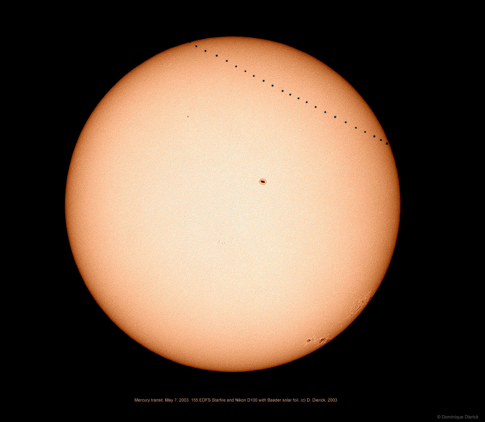

<!doctype html>
<html lang="en">
  <head>
    <meta charset="UTF-8">
    <title>NASA App</title>
    <link rel="stylesheet" href="style.css" type="text/css">
  </head>
  <body>
    <div class="page-wrapper">
      <div class="gallery">
        <button class="btn to-globe-view">

        </button>
        <div class="collage">
          <button class="collage-mode-switch btn">
            <!-- Switch btw 2 modes -->
          </button>
          <div class="collage-display">
            <!-- <div class="detail-view-wrapper">
              <div class="img-wrapper">
              </div>
                
              <div class="img-description">
                <h3 class="img-title">A Mercury Transit Sequence</h3>
                <h4 class="img-date">2019-11-10</h4>
                <p class="img-explanation">
                    Tomorrow -- Monday --  Mercury will cross the face of the Sun, as seen from Earth. Called a transit, the last time this happened was in 2016.  Because the plane of Mercury's orbit is not exactly coincident with the plane of Earth's orbit, Mercury usually appears to pass over or under the Sun.  The featured time-lapse sequence, superimposed on a single frame, was taken from a balcony in Belgium shows the entire  transit of 2003 May 7.  That solar crossing lasted over five hours, so that the above 23 images were taken roughly 15 minutes apart.  The north pole of the Sun, the Earth's orbit, and Mercury's orbit, although all different, all occur in directions slightly above the left of the image. Near the center and on the far right, sunspots are visible. After Monday, the next transit of Mercury will occur in 2032.   Watch: the November 11 Transit of Mercury from Earth or from Space.
                </p>
              </div>
            </div> -->
          </div>
        </div>
        <!-- <div class="carousel">
          <button class="btn carousel-prev">
          </button>
          <div class="carousel-thumbnails">
            <div class="thumbnail-wrapper">
              
            </div>
          </div>
          <button class="btn carousel-next">
          </button>
        </div> -->
      </div>
      <div class="globe-view">
        <button class="btn to-gallery">

        </button>
        <!--ArcGIS API-->
      </div>
    </div>
    <script type="text/javascript" src="script.js"></script>
  </body>
</html>